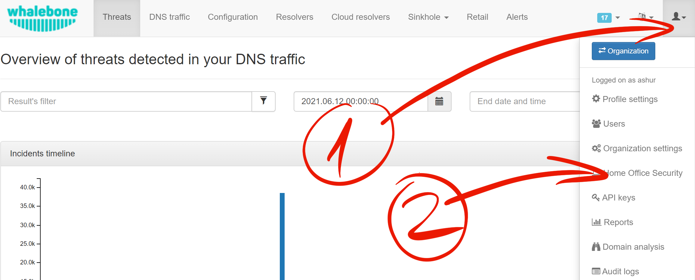
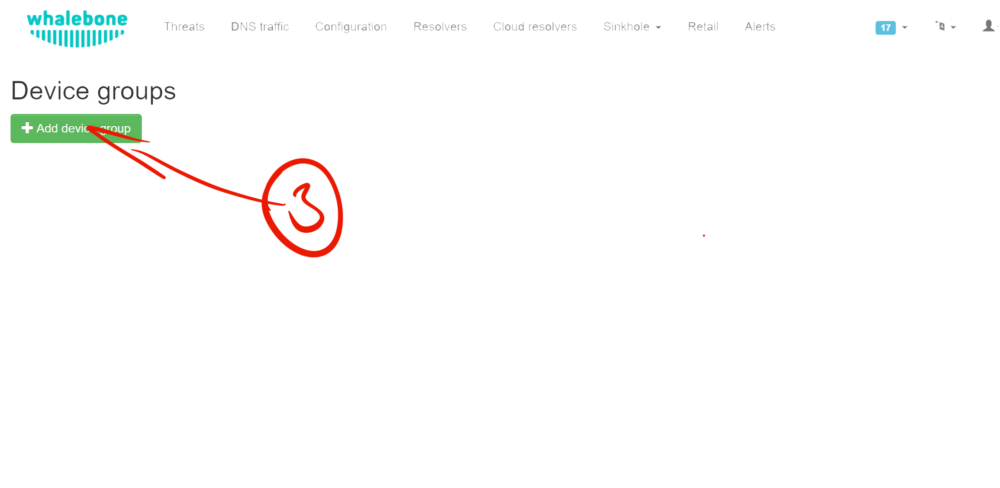
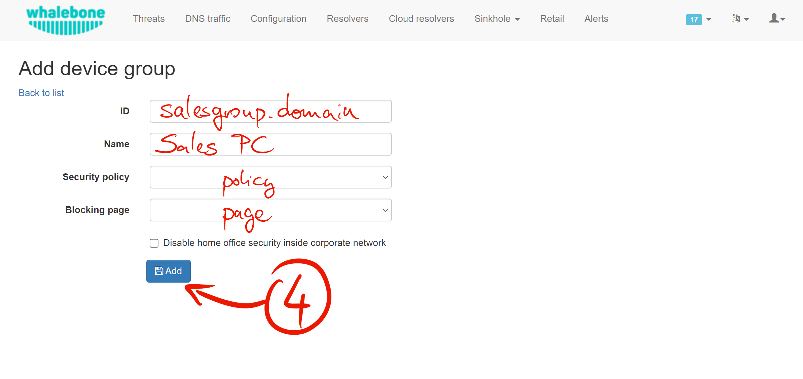
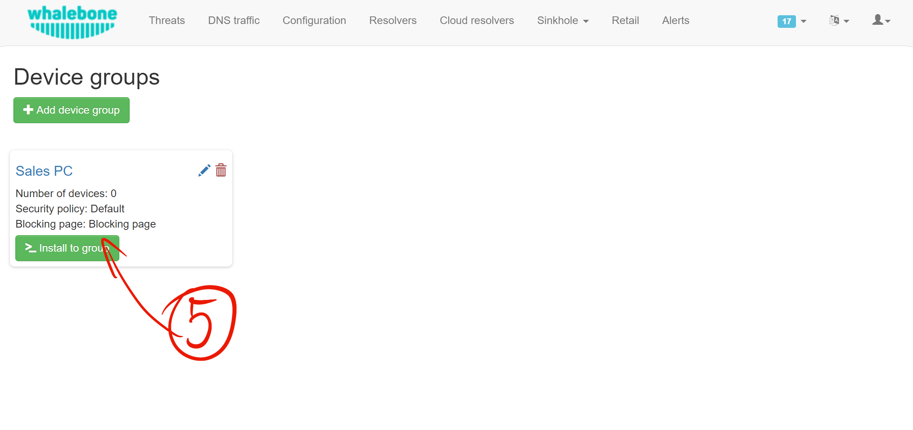
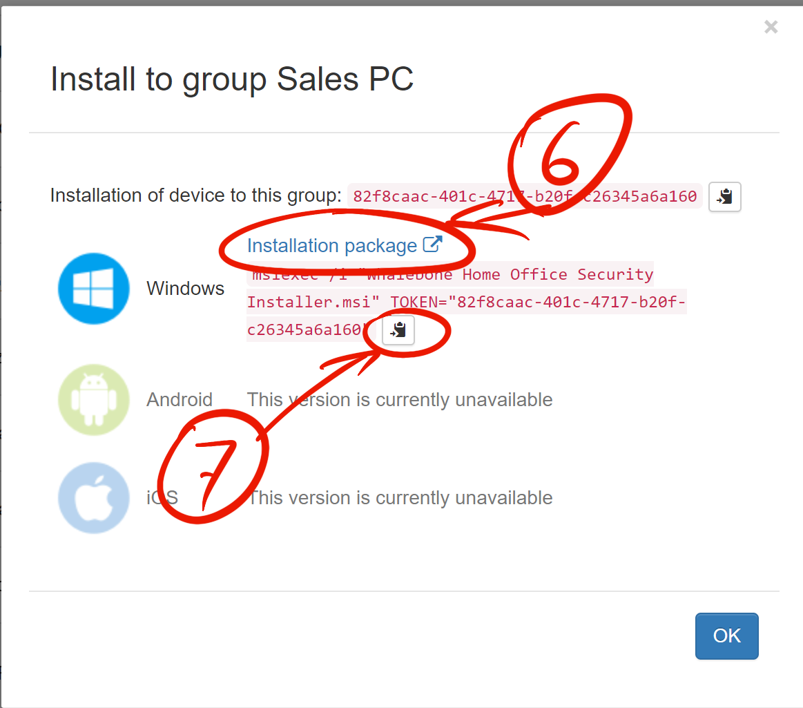
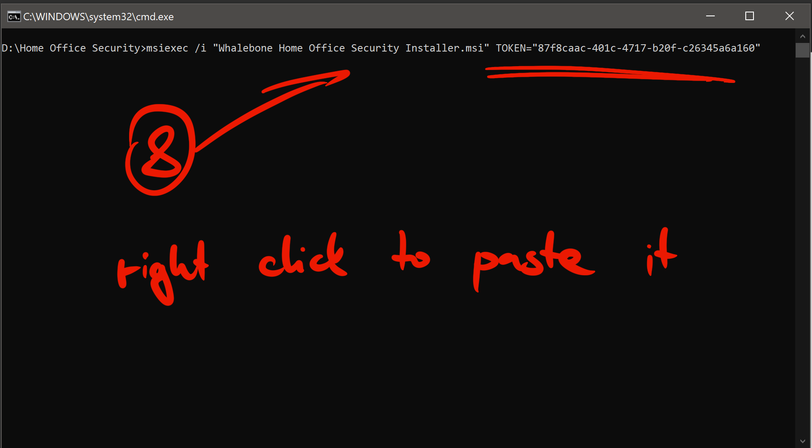
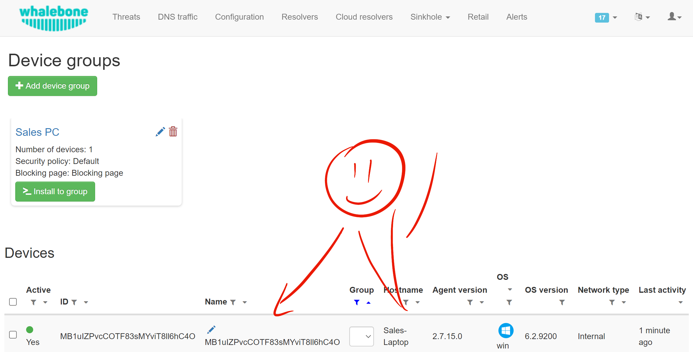

Home Office Security
Step by step installation
To install HOS on device you need to configure it first. Please open Whalebone Portal web page and use (1) User menu to navigate to (2) Home Office Security.
Create (3) a Device group.
Fill the form to suit your organization needs. ID states group identifer. It’s value could be a Active Directory group or you can define a unique custom identifer on your own. Name field makes the human friendly description. Select policy and a blocking page and then click (4) Add button to create this group.
HOS may become inactive when it detects that device is connected to secure network.
Click (5) Install to group button to see installation instructions and/or get download link to the HOS installer.
If you haven’t already download the installer (6). While the installer is being downloaded please copy the installation command to clipboard (7).
Find the folder where the installer is located. It should be file named Whalebone.Home.Office.Security.Installer.msi.
Open up a command prompt, change directory to the folder where is the installer and paste (8) the command with your mouse (right click). Execute the command. This requires admin priviledges.
Installer will end prematurely with error when executed without token argument.
Installer has minimal UI, if there was no error message installation succeeded.
Device is now visible in the Whalebone Portal web page.
Operation
Whalebone Home Office Security (HOS) provides a DNS filtering functionality for your desktop and mobile devices. It intercepts DNS traffic and inspects it before sending network packets to the wild. It protects the device from network threat by scanning every DNS packet.
Policies
Policy is a set of rules that instructs how to operate. Based on policy the device or the local/cloud resolver decides what to during DNS resolution. This set of rules persist on the device and is updated initially and later synchronized. Because of that Portal provides monitoring of these devices.
Devices
Your organization may divide devices into single or multiple groups. Every device may belong exactly to a single group only. Each must be a member of Device group before they get monitored. Each group provides a security Policy which is later conditionally applied to them. Whether the device is present on the internal or external network makes it active or inactive.
It separates the network location into internal or external and the biggest role here has the Internal domain setting which must be defined in the Device group. If HOS detects the Internal domain the network location is decided as internal. Detection is performed by running DNS query for the configured internal domain and receiving the configured answer.
States
HOS is constantly monitoring changes on the network interfaces and based on the conditions it changes its states.
ActiveAll DNS traffic is diverted to DoH server. HOS becomes
Activewhen it is connected to the public network, but theInternal domainis unreachable. This state is used for the danger zones such as public wifi.InactiveDNS trafic is left intact. This state is used when device can’t connect to the Internet or when it is connected through internal network.
Security
In the background HOS uses DNS-over-HTTPs or DoH. The Hostname of the Resolver is never diverted and is cached. The identification and authenticity is left to the TLS protocol. When device belongs to any Domain, then all domain names and their subdomains are allowed to reach the DNS servers they route to. HOS uses Win32_NetworkAdapterConfiguration WMI table to get the information.
Service details and specifics
HOS comes with Windows Installer for the deployment. No user interaction is required to perform the installation, installer requires token though. Default target directory:
C:\Program Files (x86)\Whalebone\Home Office Security\
Supported desktop OS
Desktop |
Server |
|---|---|
☐ Windows XP |
☐ Windows 2000 |
☐ Windows Vista |
☐ Windows 2003, Windows 2003 R2 |
☑ Windows 7 |
☐ Windows 2008, Windows 2008 R2 |
☑ Windows 8 |
☑ Windows 2012, Windows 2012 R2 |
☑ Windows 8.1 |
☑ Windows 2016 |
☑ Windows 10 |
☑ Windows 2019 |
Windows 7 systems must be up-to-date or at least have KB3033929 installed.
Windows Server 2016 systems must have secure boot disabled.
Portal
First, check that your organization have policies and device groups prepared. If you haven’t set any policies or device groups, please configure them before you proceed further.
Device Group Configuration
Automatic upgrade: When this configuration option is checked, HOS application on Windows will update to latest production version when a newer version is available to download. This option takes effect on Windows only, on mobile upgrades are performed by the vendor ecosystem.
Domain exception: HOS service will not divert any DNS queries that contain question for domain on the exception list. E.g. when example.com is specified, the DNS request will be resolved as usual on the resolver configured by operating system. A same rule applies for question subdomain.example.com.
Please note that two settings mentioned above (Automatic upgrade and Domain exception) are featured in version 2.10.0 for Windows only. If you are running earlier version, please update to 2.10.0 manually.
Install Instructions
Install or Update:
msiexec /i "Whalebone.Home.Office.Security.Installer.msi" TOKEN="60d5806e-07fe-432a-a4ad-7797d82782b3"
Uninstall:
msiexec /x "Whalebone.Home.Office.Security.Installer.msi
Service requirements
Because HOS must intecept network traffic it requres to run as SYSTEM account. You can query the service by name hos to see if it started properly. When none or invalid installation token is supplied the service it will stop.
C:\Users\admin>sc query "Whalebone Home Office Security"
SERVICE_NAME: HOS
TYPE : 10 WIN32_OWN_PROCESS
STATE : 4 RUNNING
(STOPPABLE, PAUSABLE, ACCEPTS_SHUTDOWN)
WIN32_EXIT_CODE : 0 (0x0)
SERVICE_EXIT_CODE : 0 (0x0)
CHECKPOINT : 0x0
WAIT_HINT : 0x0
On first run HOS also installs windivert system driver.
C:\Users\admin>sc query windivert type=kernel
SERVICE_NAME: windivert
TYPE : 1 KERNEL_DRIVER
STATE : 4 RUNNING
(STOPPABLE, NOT_PAUSABLE, IGNORES_SHUTDOWN)
WIN32_EXIT_CODE : 0 (0x0)
SERVICE_EXIT_CODE : 0 (0x0)
CHECKPOINT : 0x0
WAIT_HINT : 0x0
Service is configured to recover after crash three times and then stay stopped.
Application Firewall Settings
Enable TCP port 443 for the Whalebone Home Office Security.exe in the application firewall. To enable it for all network profiles in Windows, adjust following command to let HOS connect to your DoH server (e.g. 185.150.10.71):
If HOS service does not work please ensure that HOS service can connect to hos.whalebone.io and mobileapi.whalebone.io.
netsh advfirewall firewall add rule name="Whalebone Home Office Security" dir=out action=allow program="C:\Program Files (x86)\Whalebone\Home Office Security\Whalebone Home Office Security.exe" enable=yes remoteip=185.150.10.71,LocalSubnet
It is not necessary for the service to listen on port 53, thus there is no requirement for the application firewall to follow.
Additionally, service is listening on TCP endpoint localhost:9000 to provide data endpoint for UI app, and UI app server whosui.exe listens on TCP endpoint localhost:55221 to render graphical components. Even though these ports are not critical for HOS operation they are relevant for UI app AdminUI.exe. Please ensure that services are allowed to listen on those local ports as this allows user to have insight into app operation.
Application Logs
Service logs can be found at c:\ProgramData\Whalebone\Home Office Security\Logs\, which contain detailed information about application states and operation. In case you encounther unexpected service behaviour please include this Log folder and/or Config folder along inside your support ticket. Application provides additional information for operation trace, in AdminUI.exe app, Events tab may give you better insight in HOS operation.